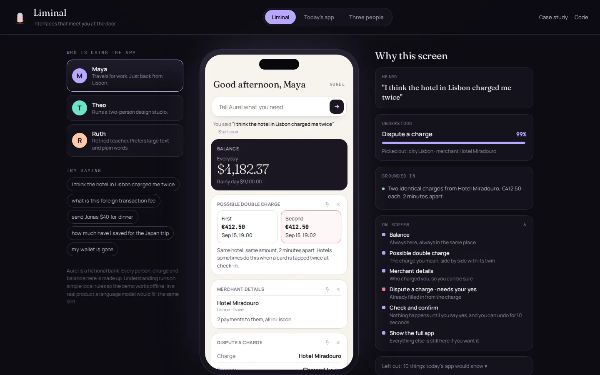
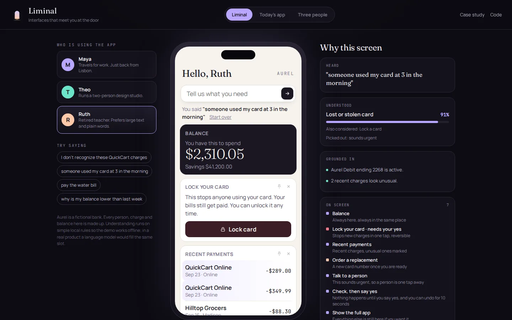
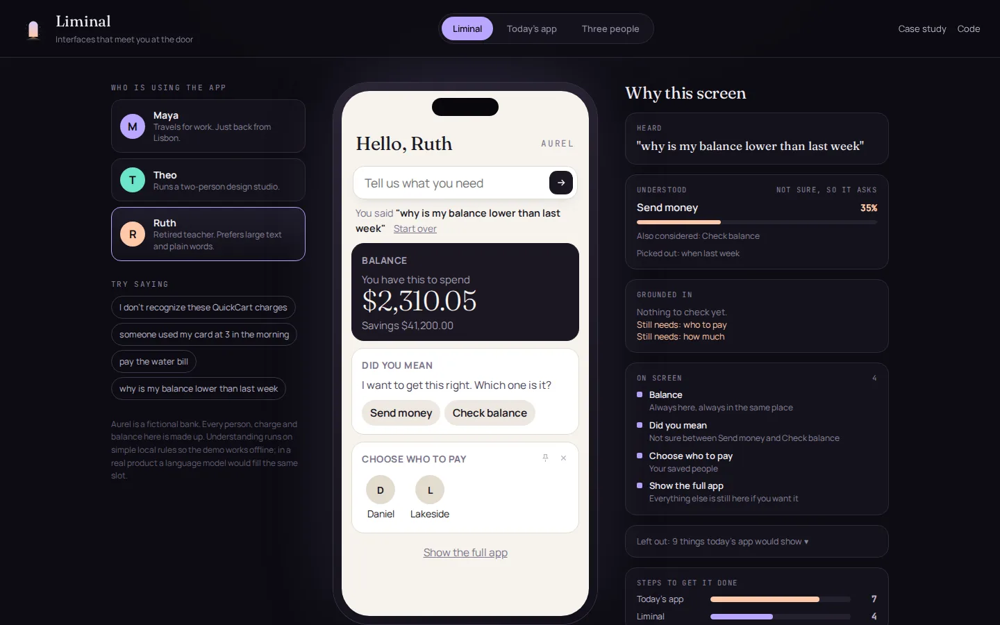
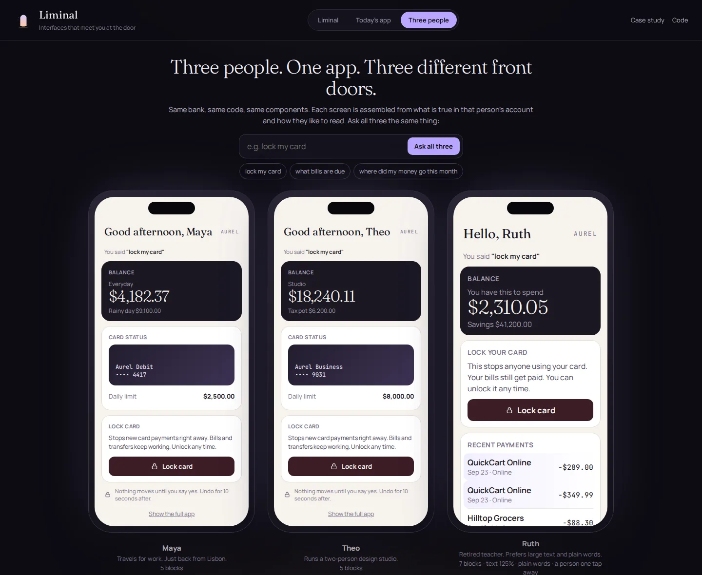
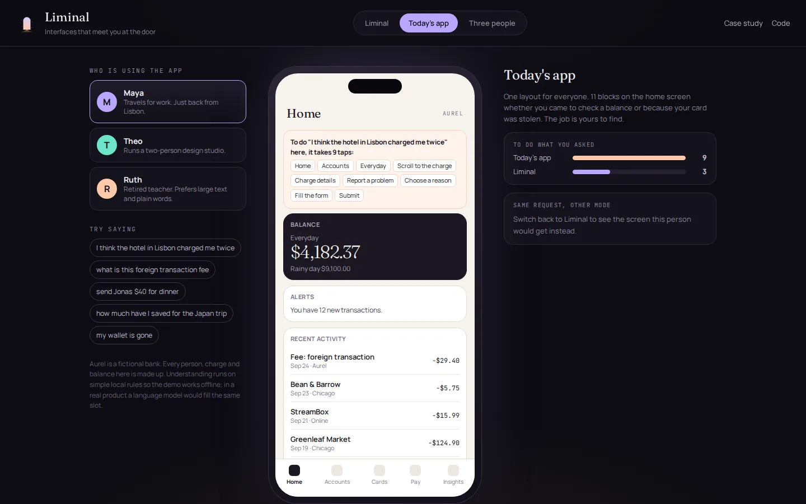

Liminal reshapes a banking app around what each person came to do, shows why every piece is on the screen, and never moves money without a yes.
Open almost any banking app and you get the same tabs. They mirror how the bank is organised, which teams own which screens.
Nobody opens the app thinking in tabs. They open it because something happened.
Each of those moments is a hunt through menus. In the static app modelled here, disputing a charge takes 9 taps across five screens. Locking a stolen card takes 7. And the person doing it is often stressed, travelling, or not comfortable with apps at all.
Instead of one layout for everyone, Liminal treats the app as a kit of about twenty parts and assembles the screen for this person, this moment. Say what you need and the right parts arrive, already filled in from your own account.
The obvious risk is that this goes badly in a bank. If the layout keeps moving, people get lost. If an AI-enabled system takes actions, money moves when it shouldn't. So the real product here is not the reshaping. It is the set of rules that make reshaping safe enough to trust.
Anything that moves money, locks a card or changes a limit is shown as a prepared form, followed by a confirm step and a 10 second undo. A wrong guess costs a glance, never a payment.
Balance is always first. "Show the full app" is always last. The middle changes shape, the edges don't, so nobody feels lost and the old way is always one tap away.
The reasoning panel is not a debug view. It is the trust layer: what it heard, what it understood, what in your account it checked, and what it chose to leave out.
Confidence needs both strength and a clear margin over the runner-up. Below the bar, Liminal shows a short "did you mean" and strips every action from the screen. It would rather ask than act on a guess.
Pins, hides and corrections. Nothing from where you hesitate or what you look at. Anchors and the confirm step can't be hidden.
The engine is five small steps. Each one is plain, tested JavaScript, so every decision can be inspected.
Intent, confidence, and the details that matter: who, how much, which charge.
understand.jsChecks the account. Double charges, 3am purchases at new stores, bills due, balance.
ground.jsPicks blocks, writes a reason for each, keeps anchors, adds the confirm step.
compose.jsNothing happens until a yes. Undo for 10 seconds.
app.jsPins, hides and corrections, saved per person.
prefs.jsIn this prototype the Understand step is a transparent rule-based stand-in, so the demo runs offline and is fully inspectable. In a real product a language model would fill the same slot and return the same shape. Nothing downstream would change, which is the point of the design.
Her opening screen already flags that the hotel charged her twice, two minutes apart. One tap and the dispute screen arrives with both charges side by side and the form filled in.
Static app: 9 taps. Liminal: 3.

Ruth's preferences make every screen bigger and simpler. When she says someone used her card at 3am, the lock button comes first, the strange charges are marked, and because it sounds urgent, a real person is on the screen too.

"Why is my balance lower than last week" could be several things. Liminal shows a short choice and no actions at all. Once Ruth picks, it remembers that phrasing for next time.

"Lock my card" gives Maya and Theo a clean lock screen. Ruth gets the same lock, plus the two charges that are probably why she's asking, and a person who can help get the money back. Same components, same code.

The demo includes a conventional version so the difference is visible, not claimed: eleven blocks for everyone and the tap path for the same task spelled out.

I wrote two sets of requests. The first I used while building the rules. The second I wrote after the rules were frozen and never tuned against. These numbers are computed live from the engine on this page.
| Tuned set (30) | Held-out set (15) | |
|---|---|---|
| Understood correctly | 100% | 47% |
| Steps to finish, static app | 6.1 | 6.2 |
| Steps to finish, Liminal | 2.4 | 2.7 |
| Blocks on screen (static shows 11) | 4.8 | 4.4 |
| Misses that asked first | 0 | 6 |
| Misses shown with confidence | 0 | 2 |
| Actions that waited for a yes | all | all |
The held-out accuracy is low, and I think that is the most useful result here. Hand-written rules overfit the phrasings they were built on. That is exactly why the understanding step is designed to be swapped for a model.
What the product owns is how it behaves when understanding fails. On the held-out set, 6 of 8 misses were caught as "not sure" and turned into a question. The 2 confident misses still could not move a cent without a yes. Better understanding raises the first row. The rules keep the last row at "all" no matter what.
Time to finish the top five jobs against the static app as control. Share of disputes and card locks started from the app instead of a call. Correction rate falling over time for each person.
Zero actions without a confirm, checked in code and in logs. Undo rate as an early sign the screen led someone wrong. How often people tap "Show the full app", as a measure of feeling lost.
Moments with high stress and low frequency: disputes, lost cards, fees abroad. Daily balance checks gain little. A stolen card at 3am gains a lot.
No learning from hesitation or gaze. No automatic actions, even "safe" ones. No hiding the confirm step for power users. Each would improve a metric and cost trust.
A liminal space is the in-between, the doorway. The product lives in the moment between needing something and doing it, so the mark is a lit doorway: lavender at the top, warm at the floor, a little light spilling out toward you.
Fraunces for warmth in headlines, Manrope for clear interface text, JetBrains Mono for anything that is data. The bank inside the demo, Aurel, uses a paper-light palette so the product and the brand that would license it stay distinct.